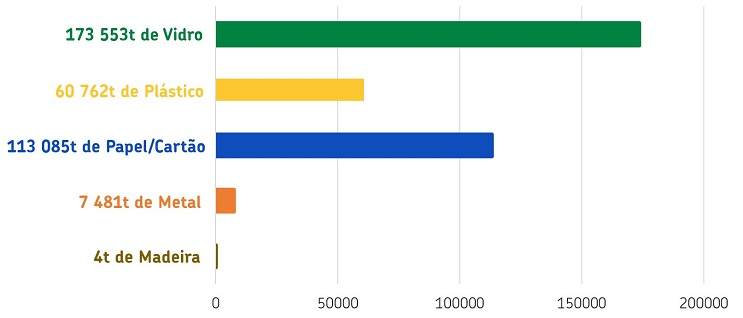

O que é a recolha seletiva?
Recolha seletiva é o termo utilizado para o recolhimento dos
materiais que são possíveis de serem reciclados, previamente
separados na fonte geradora. Dentre estes materiais recicláveis
podemos citar os diversos tipos de papéis, plásticos, metais e
vidros.
Para que serve a recolha seletiva?
A separação do lixo evita a contaminação dos materiais reaproveitáveis,
aumentando o valor agregado destes e diminuindo os custos de reciclagem.
Principais formas da recolha seletiva
- Porta a Porta → Veículos coletores percorrem as residências em
dias e horários específicos que não coincidam com a coleta normal de lixo.
Os moradores colocam os recicláveis nas calçadas, acondicionados em contentores distintos;
- PEV (Postos de Entrega Voluntária) → Utiliza contêineres ou pequenos depósitos, colocados em pontos
físicos no município, onde o cidadão, espontaneamente, deposita os recicláveis.
- Postos de Troca → Troca do material a ser reciclado por algum bem.
- PICs → Outra modalidade de coleta é a PICs, Programa Interno de Coleta Seletiva, que é realizado em
instituições públicas e privadas, em parceria com associações de catadores.
Recolha seletiva 2018 - sistema integrado de gestão de resíduos de embalagens(sigre)
